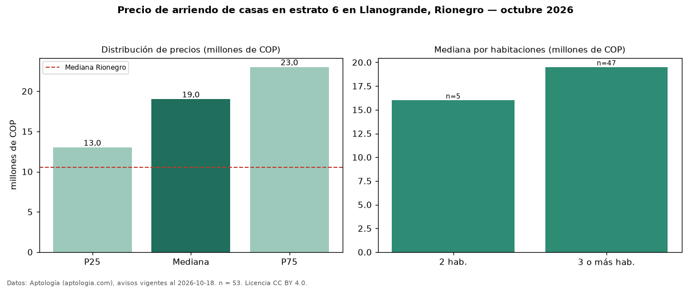

Precio de arriendo de casas en estrato 6 en Llanogrande, Rionegro — octubre 2026
Con 53 avisos vigentes, el canon mediano de casas en estrato 6 en arriendo en Llanogrande, Rionegro es COP 19 millones al mes. Frente a la mediana de toda la vivienda de estrato 6 de Llanogrande (COP 14 millones, n = 83), queda 36 % por encima; este segmento reúne el 64 % de esos avisos. Por metro cuadrado, la mediana es COP 28.730/m² al mes (n = 44), 43 % por debajo del conjunto de referencia (COP 50.556/m²). El área mediana anunciada es 463 m². El segmento con más oferta es el de 3 o más habitaciones (47 avisos, mediana COP 19,50 millones); pasar de 2 habitaciones a 3 o más habitaciones cambia la mediana +22 %. La administración mediana declarada es COP 850.000 al mes (n = 15), aparte del canon. La mitad central de los avisos va de COP 13 millones a COP 23 millones (razón 1,8), una dispersión moderada. La mediana de todas las casas en arriendo de Rionegro es COP 10,50 millones (+81 % de diferencia). Datos: Aptología (aptologia.com), CC BY 4.0 — https://www.aptologia.com/casas-en-arriendo/rionegro/llanogrande. Archivos: PDF, CSV con las cifras y gráfica PNG.

| Avisos únicos | 53 |
|---|---|
| Percentil 25 | COP 13.000.000 |
| Mediana | COP 19.000.000 |
| Percentil 75 | COP 23.000.000 |
| Mediana por m² | COP 28.730 |
Fuente: avisos vigentes de portales inmobiliarios recopilados por Aptología, deduplicados (mínimo 30 avisos únicos por celda). Precios pedidos, no cerrados. Fecha: 2026-10-18.